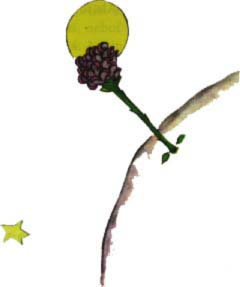

Nevìdìl jsem. Mìl jsem právì spoustu práce, proto¾e jsem zkou¹el od¹roubovat pøíli¹ uta¾ený svorník motoru. Pùsobilo mi to plno starostí, nebo» jsem pøicházel na to, ¾e porucha je asi velmi vá¾ná. A ponìvad¾ pitné vody ubývalo, obával jsem se nejhor¹ího.
"Naè jsou ty trny?"
Malý princ nikdy neupustil od otázky, kdy¾ ji jednou dal. Svorník mì zlobil a odpovìdìl jsem, co mì právì napadlo:
"Trny nejsou na nic. Od kvìtin je to èirá zlomyslnost!"
"Ó!"
Ale po chvilce mlèení odsekl trochu nevra¾ivì:
"Nevìøím ti! Kvìtiny jsou slabé. Jsou naivní. Zabezpeèují se, jak dovedou. Myslí si, ¾e jsou stra¹né, kdy¾ mají trny..."
Neodpovìdìl jsem. V té chvíli jsem si øíkal: Jestli se ten svorník je¹tì nepohne, rozbiji ho kladivem.
Malý princ mì znovu vyru¹il z pøemý¹lení:
"A ty myslí¹, ¾e kvìtiny..."
"Ale kdepak! Já nic nemyslím!" odpovìdìl jsem nazdaøbùh. "Já myslím na vá¾né vìci."
Podíval se na mne u¾asle.
"Na vá¾né vìci!"
Vidìl, jak se skláním s kladivem a s prsty èernými od oleje nad pøedmìtem, který se mu zdál hroznì o¹klivý.
"Mluví¹ jako ti dospìlí!"
To mì trochu zahanbilo. A je¹tì nemilosrdnì dodal:
"V¹echno splete¹ dohromady... V¹echno pomíchá¹!"
Byl opravdu velice rozhnìván. Potøásal ve vìtru svými sytì zlatými vlasy:
"Znám planetu, kde ¾ije jeden moc èervený pán. Nikdy nepøivonìl ke kvìtinì, nikdy se nepodíval na hvìzdu. Nikdy nemìl nikoho rád. Nikdy nic nedìlal, jen poèítal. A celý den opakuje jako ty: "Já jsem vá¾ný èlovìk! Já jsem vá¾ný èlovìk!" - A nafukuje se pýchou. Ale to není èlovìk, to je pýchavka!"
"Co¾e to je?"
"Pýchavka!"
Malý princ byl teï hnìvem celý bledý.
"U¾ miliony let si kvìtiny tvoøí trny. A beránci je pøesto po milióny let okusují. A to není vá¾ná vìc, sna¾íme-li se pochopit, proè se kvìtiny tolik namáhají, aby mìly trny, kdy¾ ty trny na nic nejsou? Copak boj beránkù a kvìtin není dùle¾itý? Není to vá¾nìj¹í a dùle¾itìj¹í ne¾ poèítání toho tlustého èerveného pána? A co kdy¾ já znám kvìtinu, jedinou na svìtì, proto¾e neroste nikde jinde ne¾ na mé planetì? A co kdy¾ mi tu kvìtinu nìjaký beránek rázem znièí, jen tak, jednou zrána, a ani si neuvìdomí, co dìlá? To ¾e není dùle¾ité?"
Zardìl jsem se a po chvíli pokraèoval:
"Má-li nìkdo rád kvìtinu, jedinou tohoto druhu na miliónech a miliónech hvìzd, staèí mu, aby byl ¹»asten, kdy¾ se na hvìzdy dívá. Øekne si: Tam nìkde je má kvìtina... Ale se¾ere-li beránek kvìtinu, bude to, jako by najednou v¹echny hvìzdy pohasly! A to ¾e není dùle¾ité!"
Nemohl u¾ dál mluvit. Propukl náhle v pláè. Nastala noc. Odhodil jsem náøadí. Nezále¾elo mi u¾ na kladivu, svorníku, ¾ízni ani smrti. Na jedné hvìzdì, na planetì, na té mé, na Zemi, bylo nutno utì¹it malého prince. Vzal jsem ho do náruèe. Kolébal jsem ho. Øíkal jsem mu: "Kvìtinì, kterou má¹ rád, nehrozí nebezpeèí... Nakreslím tvému beránkovi náhubek. Nakreslím ti pro tvou kvìtinu ohrádku... Udìlám..." Nevìdìl jsem u¾ poøádnì, co øíci. Pøipadal jsem si stra¹nì ne¹ikovný. Nevìdìl jsem, jak se mu pøiblí¾it, jak se k nìmu dostat... Svìt slz je tak záhadný.
